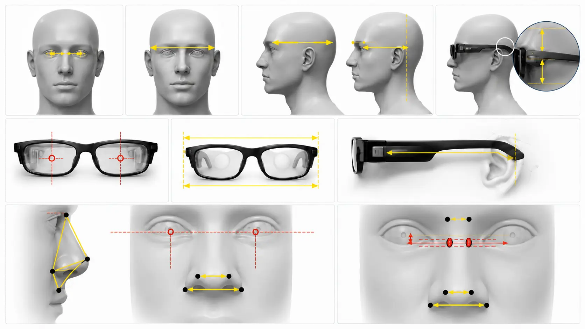

A "standard head" that accounted for almost no one.
The ID team had been using the median Western male head dimensions as the "standard head" for glasses design — a value that accounts for no ethnic variation and cannot answer "what percentage of target users will this design actually fit?"
To address this, I systematically gathered and organized anthropometric research data, built a cross-ethnic database, and developed a quantifiable coverage validation method for design values — alongside an AR UI visual comfort guideline to serve as a cross-disciplinary design reference.
Map each design value to a measurement point, and coverage becomes calculable.
AR glasses have many industrial design values — frame width, temple length, nose pad dimensions, optical position, and more. Each has to be mapped to a specific anthropometric measurement point before meaningful database comparisons can be made.
Frame width, as an example: the effective wearing width corresponds to the lateral distance across the flat area above the cheekbones on both sides of the head — which maps to the front end of the undercut curve in the glasses structure. Once the correspondence is established, the dimensional distribution from the database can calculate what percentage of people the design value covers.
Database grouping: divided into four sub-groups by East Asian / Western (predominantly Caucasian) × Male / Female. Each sub-group's 5th, 50th, and 95th percentile values are calculated, then compared against a glasses design value to quantify its coverage across populations.
Data sources: ISO 15535, ANSUR II, NIOSH, and the Taiwan Ministry of Labor anthropometric database — covering five ethnic groups: White, Black, Hispanic, Asian, and Native American.
Three zones, each addressing a different source of wearing comfort.
- Optical design values. The spatial relationship between the optical module and the eye, affecting image clarity and visual comfort.
- Frame design values. Temple length and frame width, affecting overall fit.
- Nose pad design values. Nose bridge width, height, and angle, affecting weight distribution and long-wear comfort.
Coverage results for each zone depend on the tolerance range of the design value and the target-market ethnic group the product is primarily aimed at.
An AR UI spec grounded in how the eye actually focuses.
Lightweight AR glasses UI faces a fixed focal plane, a small display, and long-wear visual fatigue — so every design decision needs a clear parameter spec.
Depth & VAC — angular scaling, not binocular disparity. Most AR glasses have a fixed image focal plane at ~1.5–2 m. Adding binocular disparity to make UI elements appear closer creates a vergence-accommodation conflict (VAC), causing fatigue. Informational UI should avoid near-field disparity; when depth is needed, prioritize 2D cues (size, opacity, occlusion), and keep interactive buttons and tooltips on the same UI focal plane to avoid frequent depth switching.
Text size — defined by visual angle, not pt values. AR display distance differs from standard screens, so applying pt values directly makes text too small or inconsistent. The guideline defines four text levels by visual angle (°):
| Text Level | Target Angle | Height at 1.2 m (pt) | Usage |
|---|---|---|---|
| Minimum legible | 0.25° | ≈ 15 pt | Minimum legibility threshold — not recommended for primary reading |
| Body | 0.35° | ≈ 21 pt | Descriptive text, short prompts |
| Subheading | 0.45° | ≈ 27 pt | Option labels, section tags |
| Heading | 0.60° | ≈ 36 pt | Primary heading, status labels |
Display zone — keep primary content within ±10° of center gaze. The optimal safe zone is ±10° from the vertical screen center, corresponding to the canvas (440 × 240 px) center with 120 px margin top/bottom and 100 px left/right — placing primary reading content within the most natural gaze range to reduce fatigue from sustained eye deviation.
- Image above, text below: last text line ≥ 100 px from the bottom edge.
- Interactive options: ≥ 100–120 px from the top edge to prevent prolonged upward-gaze triggering.
- Single-screen text: no more than 30–40 characters; line spacing at 120–140% of character height.
- Panel size limits: vertical ≤ 12°, horizontal ≤ 25°.
Applied to real products — and into patents.
The ergonomic database and validation method were applied to product design; the AR UI guideline serves as a cross-disciplinary design reference.
Products A, B, and C each validated across the three zones — optical, frame, and nose pad — covering 6 design values in total. Each value was benchmarked against database percentiles to assess coverage in East Asian and Western populations, with targeted adjustment recommendations based on each product's intended market.
Combining the ergonomic-database validation method with glasses structural design, 4 patents total have been advanced — 2 have entered the formal filing process.
What I took from this project wasn't the data — it was the language of cross-disciplinary design. Mechanical engineers cared about manufacturing tolerances, ID about visual proportions, optical engineers about optical-path deviation; learning to translate between them and find a shared evaluation framework was the hard part. Quantifying coverage changed how design discussions happened, too — from "this seems like it could work" to "this value covers XX% of Asian women, should we adjust?" For emerging hardware with no ready-made standards, building the methodology itself is part of the design work.